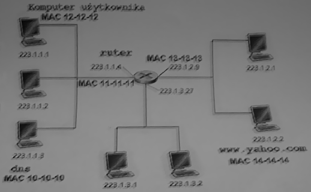

Egzamin SKO1 Poprawkowy
czê¶æ pisemna
zestaw A, 16 luty 2006
Numer indeksu: ................................
Zadanie 1
Sieæ LAN w firmie XYZ ma adres 172.16.0.0/20. W zwi±zku z bardzo szybkim rozwojem firmy i du¿± ilo¶ci± nowych komputerów w sieci pojawi³o siê bardzo du¿o ramek rozg³oszeniowych. Aby ograniczyæ ich ilo¶æ postanowiono podzieliæ sieæ na podsieci. Podzia³ mia³ nast±piæ zgodnie ze struktur± firmy. W firmie ka¿dy pracownik posiada komputer. W dziale marketingu pracuje 280 osób, w dziale sprzeda¿y 514 osób, a w ksiêgowo¶ci 25 osób.
Podziel sieæ tak, aby umo¿liwiæ dwukrotny rozrost firmy (dwa razy wiêcej zatrudnionych osób). Pamiêtaj o pozostawieniu adresu IP dla rutera w ka¿dej z podsieci.
| Numer podsieci |
Adres podsieci |
Maska (V.X.Y.Z) |
Zakres
adresów (razem z interfejsem rutera) |
Adres rozg³oszeniowy |
Ilo¶æ interfejsów sieciowych |
| - | |||||
| - | |||||
| - | |||||
| - |
Zadanie 2
|
Mamy sieæ jak na rysunku obok. U¿ytkownik pracuj±cy na komputerze o adresie IP 223.1.1.1 jednokrotnie
wysy³a "ping-a" do komputera www.yahoo.com.Zak³adamy, ¿e: |
 |
| Tre¶æ komunikatu (zawarto¶æ pakietu lub ramki) |
Protoko³y | adres IP nadawcy |
adres MAC nadawcy |
adres IP celu |
adres MAC celu |
| FF:FF:FF:FF:FF:FF | |||||
| 223.1.1.3 | |||||
| 223.1.1.3 | |||||
| DNS/UDP | |||||
| FF:FF:FF:FF:FF:FF | |||||
| ARP | |||||
| ICMP | 223.1.2.2 | ||||
| 223.1.1.1 | |||||
| 13-13-13 | |||||
| ICMP | 12-12-12 |
Ripped by: marcin[at]pjwstk.edu.pl. Do sprawdzania poprawno¶ci policzonej maski, adresu sieci i rozg³oszeniowego, warto odwiedziæ: http://42.pl/ipcalc